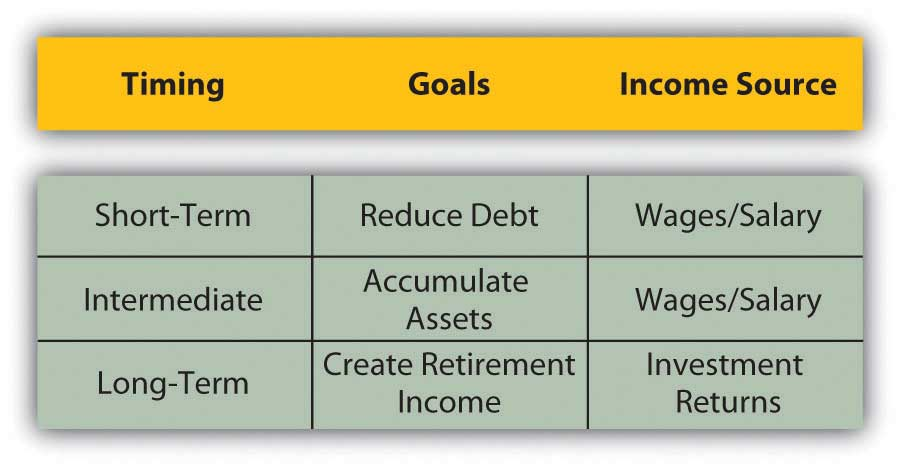
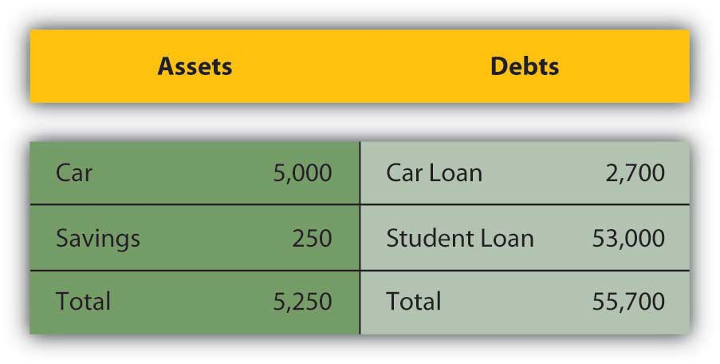
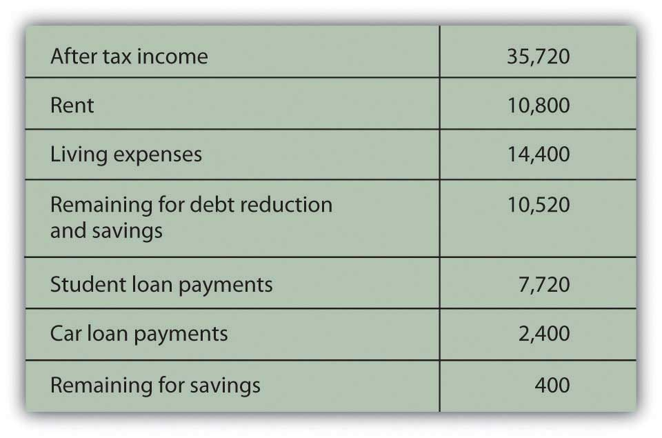
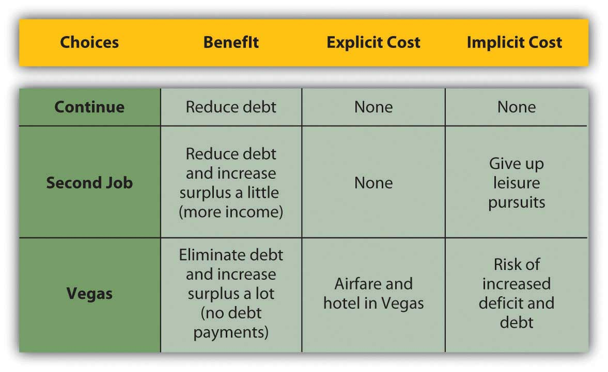
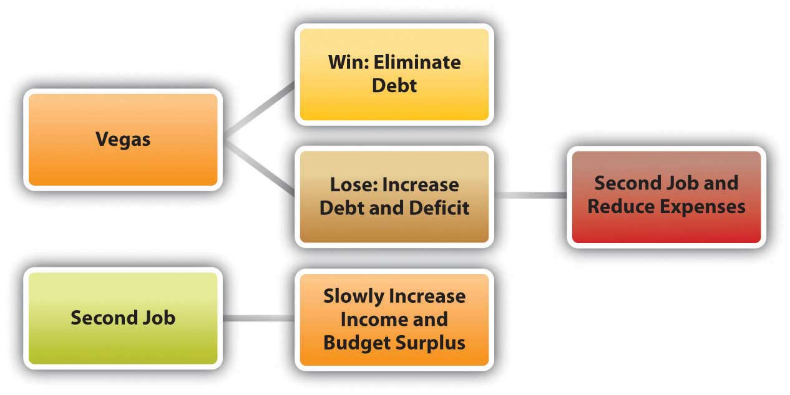
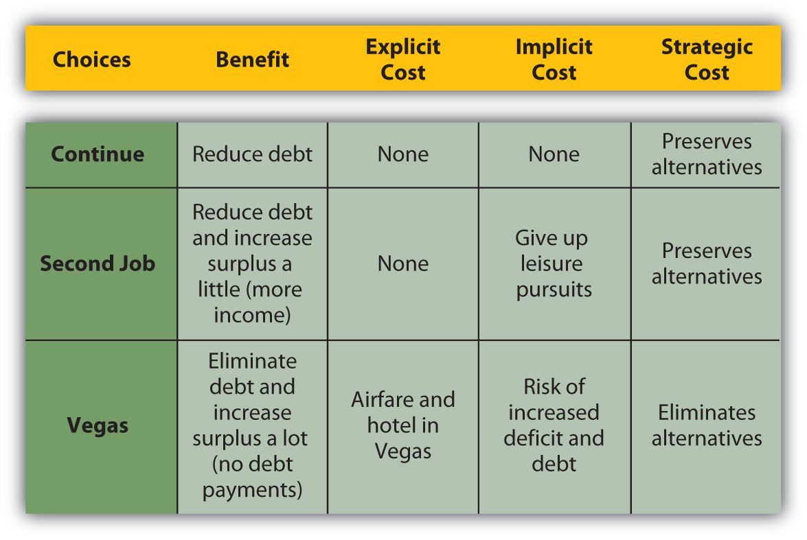

A financial planning processA recursive process of defining goals, assessing situations, identifying and evaluating choices, making choices and assessing the results, redefining goals, and so on. involves figuring out where you’d like to be, where you are, and how to go from here to there. More formally, a financial planning process means the following:
Personal circumstances change, and the economy changes, so your plans must be flexible enough to adapt to those changes, yet be steady enough to eventually achieve long-term goals. You must be constantly alert to those changes but “have a strong foundation when the winds of changes shift.”“Forever Young,” music and lyrics by Bob Dylan.
Figuring out where you want to go is a process of defining goals. You have shorter-term (1–2 years), intermediate (2–10 years), and longer-term goals that are quite realistic and goals that are more wishful. Setting goals is a skill that usually improves with experience. According to a popular model, to be truly useful goals must be Specific, Measurable, Attainable, Realistic, and Timely (S.M.A.R.T.). Goals change over time, and certainly over a lifetime. Whatever your goals, however, life is complicated and risky, and having a plan and a method to reach your goals increases the odds of doing so.
For example, after graduating from college, Alice has an immediate focus on earning income to provide for living expenses and debt (student loan) obligations. Within the next decade, she foresees having a family; if so, she will want to purchase a house and perhaps start saving for her children’s educations. Her income will have to provide for her increased expenses and also generate a surplus that can be saved to accumulate these assets.
In the long term, she will want to be able to retire and derive all her income from her accumulated assets, and perhaps travel around the world in a sailboat. She will have to have accumulated enough assets to provide for her retirement income and for the travel. Figure 1.10 "Timing, Goals, and Income" shows the relationship between timing, goals, and sources of income.
Figure 1.10 Timing, Goals, and Income
Alice’s income will be used to meet her goals, so it’s important for her to understand where her income will be coming from and how it will help in achieving her goals. She needs to assess her current situation.
Figuring out where you are or assessing the current situation involves understanding what your present situation is and the choices that it creates. There may be many choices, but you want to identify those that will be most useful in reaching your goals.
Assessing the current situation is a matter of organizing personal financial information into summaries that can clearly show different and important aspects of financial life—your assets, debts, incomes, and expenses. These numbers are expressed in financial statements—in an income statement, balance sheet, and cash flow statement (topics discussed in Chapter 3 "Financial Statements"). Businesses also use these three types of statements in their financial planning.
For now, we can assess Alice’s simple situation by identifying her assets and debts and by listing her annual incomes and expenses. That will show if she can expect a budget surplus or deficit, but more important, it will show how possible her goals are and whether she is making progress toward them. Even a ballpark assessment of the current situation can be illuminating.
Alice’s assets may be a car worth about $5,000 and a savings account with a balance of $250. Debts include a student loan with a balance of $53,000 and a car loan with a balance of $2,700; these are shown in Figure 1.11 "Alice’s Financial Situation".
Figure 1.11 Alice’s Financial Situation
Her annual disposable income (after-tax income or take-home pay) may be $35,720, and annual expenses are expected to be $10,800 for rent and $14,400 for living expenses—food, gas, entertainment, clothing, and so on. Her annual loan payments are $2,400 for the car loan and $7,720 for the student loan, as shown in Figure 1.12 "Alice’s Income and Expenses".
Figure 1.12 Alice’s Income and Expenses
Alice will have an annual budget surplus of just $400 (income = $35,720 − $35,320 [total expenses + loan repayments]). She will be achieving her short-term goal of reducing debt, but with a small annual budget surplus, it will be difficult for her to begin to achieve her goal of accumulating assets.
To reach that intermediate goal, she will have to increase income or decrease expenses to create more of an annual surplus. When her car loan is paid off next year, she hopes to buy another car, but she will have at most only $650 (250 + 400) in savings for a down payment for the car, and that assumes she can save all her surplus. When her student loans are paid off in about five years, she will no longer have student loan payments, and that will increase her surplus significantly (by $7,720 per year) and allow her to put that money toward asset accumulation.
Alice’s long-term goals also depend on her ability to accumulate productive assets, as she wants to be able to quit working and live on the income from her assets in retirement. Alice is making progress toward meeting her short-term goals of reducing debt, which she must do before being able to work toward her intermediate and long-term goals. Until she reduces her debt, which would reduce her expenses and increase her income, she will not make progress toward her intermediate and long-term goals.
Assessing her current situation allows Alice to see that she has to delay accumulating assets until she can reduce expenses by reducing debt (and thus her student loan payments). She is now reducing debt, and as she continues to do so, her financial situation will begin to look different, and new choices will be available to her.
Alice learned about her current situation from two simple lists: one of her assets and debts and the other of her income and expenses. Even in this simple example it is clear that the process of articulating the current situation can put information into a very useful context. It can reveal the critical paths to achieving goals.
Figuring out how to go from here to there is a process of identifying immediate choices and longer-term strategies or series of choices. To do this, you have to be realistic and yet imaginative about your current situation to see the choices it presents and the future choices that current choices may create. The characteristics of your living situation—family structure, age, career choice, health—and the larger context of the economic environment will affect or define the relative value of your choices.
After you have identified alternatives, you evaluate each one. The obvious things to look for and assess are its costs and benefits, but you also want to think about its risks, where it will leave you, and how well positioned it will leave you to make the next decision. You want to have as many choices as you can at any point in the process, and you want your choices to be well diversified. That way, you can choose with an understanding of how this choice will affect the next choices and the next. The further along in the process you can think, the better you can plan.
In her current situation, Alice is reducing debt, so one choice would be to continue. She could begin to accumulate assets sooner, and thus perhaps more of them, if she could reduce expenses to create more of a budget surplus. Alice looks over her expenses and decides she really can’t cut them back much. She decides that the alternative of reducing expenses is not feasible. She could increase income, however. She has two choices: work a second job or go to Las Vegas to play poker.
Alice could work a second, part-time job that would increase her after-tax income but leave her more tired and with less time for other interests. The economy is in a bit of a slump too—unemployment is up a bit—so her second job probably wouldn’t pay much. She could go to Vegas and win big, with the cost of the trip as her only expense. To evaluate her alternatives, Alice needs to calculate the benefits and costs of each (Figure 1.13 "Alice’s Choices: Benefits and Costs").
Figure 1.13 Alice’s Choices: Benefits and Costs
Laying out Alice’s choices in this way shows their consequences more clearly. The alternative with the biggest benefit is the trip to Vegas, but that also has the biggest cost because it has the biggest risk: if she loses, she could have even more debt. That would put her further from her goal of beginning to accumulate assets, which would have to be postponed until she could eliminate that new debt as well as her existing debt.
Thus, she would have to increase her income and decrease her expenses. Simply continuing as she does now would no longer be an option because the new debt increases her expenses and creates a budget deficit. Her only remaining alternative to increase income would be to take the second job that she had initially rejected because of its implicit cost. She would probably have to reduce expenses as well, an idea she initially rejected as not even being a reasonable choice. Thus, the risk of the Vegas option is that it could force her to “choose” alternatives that she had initially rejected as too costly.
Figure 1.15 Considering Risk in Alice’s Choice
The Vegas option becomes least desirable when its risk is included in the calculations of its costs, especially as they compare with its benefits.
Its obvious risk is that Alice will lose wealth, but its even costlier risk is that it will limit her future choices. Without including risk as a cost, the Vegas option looks attractive, which is, of course, why Vegas exists. But when risk is included, and when the decision involves thinking strategically not only about immediate consequences but also about the choices it will preserve or eliminate, that option can be seen in a very different light (Figure 1.16 "Alice’s Choices: Benefits and More Costs").
Figure 1.16 Alice’s Choices: Benefits and More Costs
You may sometimes choose an alternative with less apparent benefit than another but also with less risk. You may sometimes choose an alternative that provides less immediate benefit but more choices later. Risk itself is a cost, and choice a benefit, and they should be included in your assessment.
Financial planning is a recursive process that involves
Use the S.M.A.R.T. planning model and information in this section to evaluate Alice’s goals. Write your answers in your financial planning journal or My Notes and discuss your evaluations with classmates.
In your personal financial journal or My Notes record specific examples of your use of the following kinds of strategies in making financial decisions:
On average, would you rate yourself as more of a rational than nonrational financial decision maker?